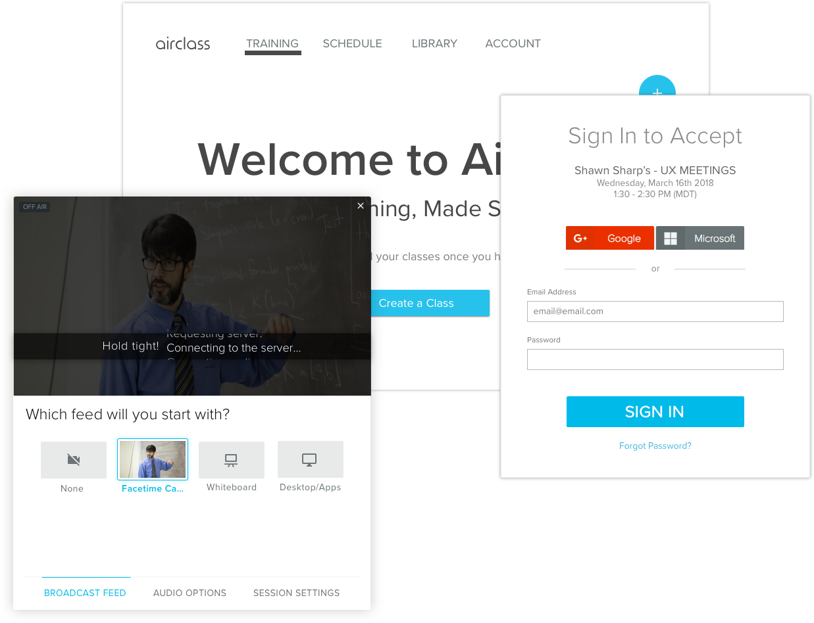
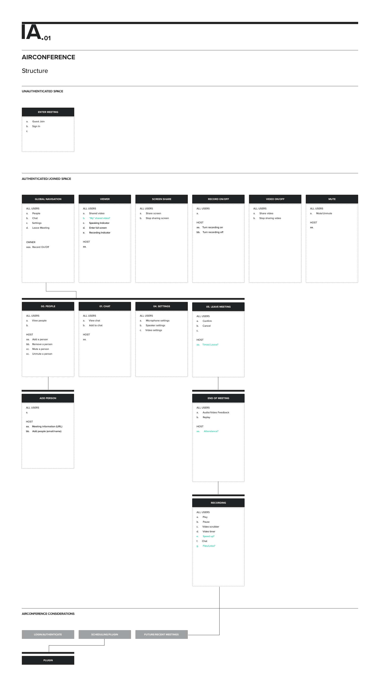
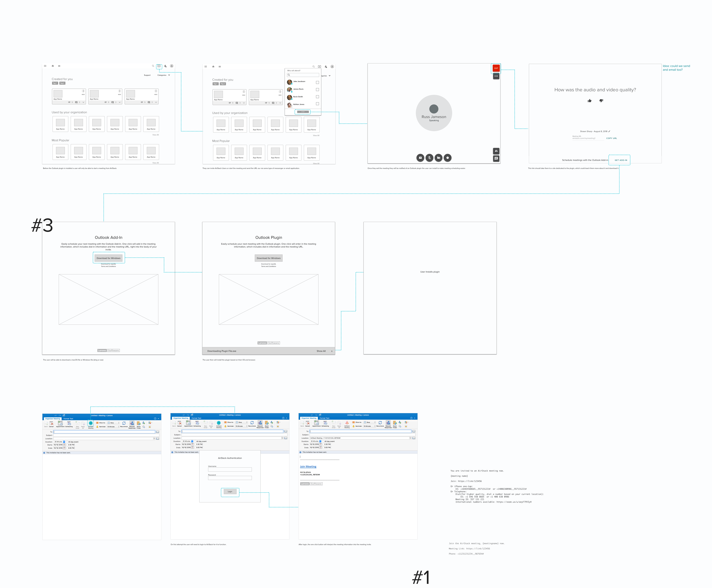
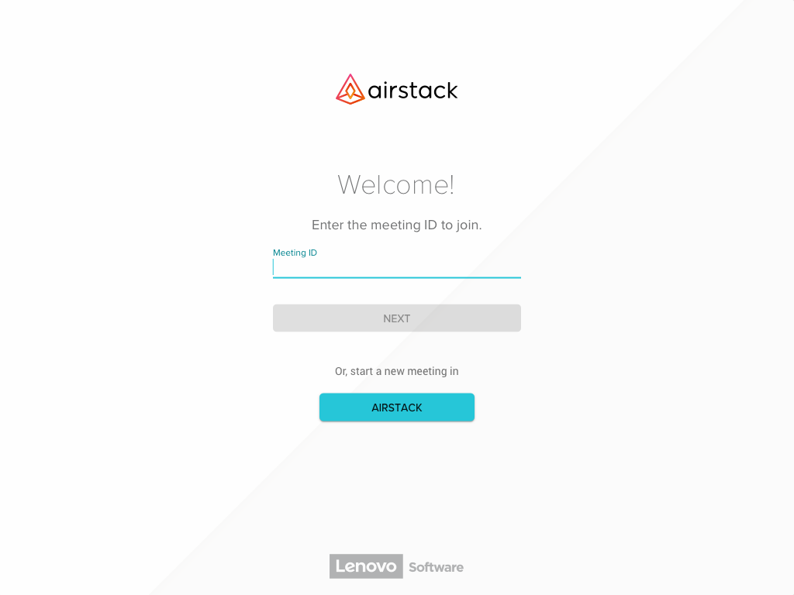
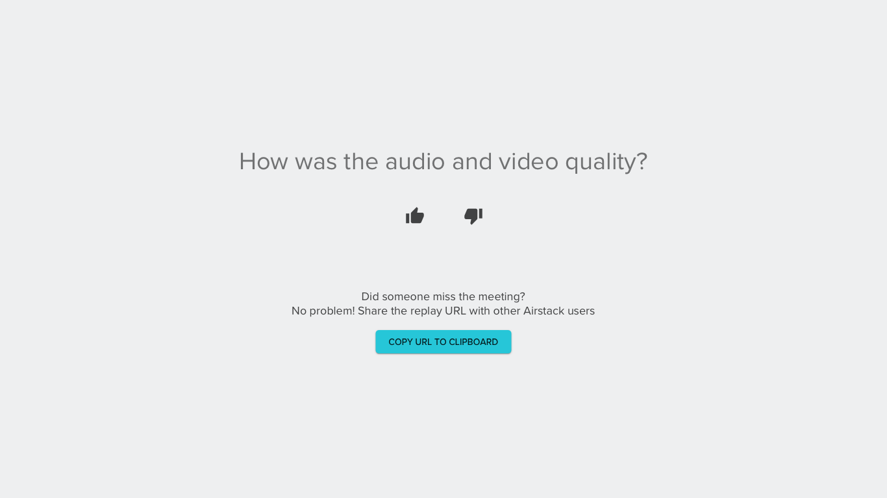

Airconference, as we code named it, was a plugin feature that we first introduced in Airstack but had full intentions to use it in future products within Lenovo. I was the lead designer and researcher in charge of how Airconference would work and look based on past products, goals, and future research.
A little about the user. We knew that our users ranged from 30-50’s working in a fast paced small-medium sized business. They usually lacked online meeting tools like Skype in their business and just needed to quickly have a conversation with others in their teams or vendors outside of their business. Lastly, there was little room for error with a paid subscription product.
Some requirements and goals we had were both technological and user related. We wanted AirConference to be usable in multiple products across Lenovo, as mentioned earlier, which ultimately made it act as its own product. It would use Vue.js component libraries, Google Material icons, and would need to be quick and easy for the end user to get into.
Let's rewind to May 2018. I was just starting my research about a concept for online meetings. I looked at competitors, where did they fall on their face and where did they shine.

I pulled all of the notes from our own product that we had built for corporate training, AirClass. The good, the bad, and the ugly.

With a list of features, a few of us from the dev and product team hit the road interviewing and discussing possibilities with other small businesses.
We placed pieces of paper, partially designed, and had each person draw what they expected to see in the people side bar, chat area, and main views.

Next, I took the trending features and needs of those users and created the IA. This acted as a sanity check for dev, UX, and PM almost acting like a feature checklist for the product.

I prefer to start in my sketchbook. Allows me to freely and quickly come up with some ideas. Sometimes I also use it for my notes.

Adding more detail allows others to start understanding what functionality will be there in the end.

Never finished, but we were finally ready to start building, watching and seeing how the product would work.

Landing / Meeting ID

Guest Sign In

Full Camera

Chat Drawer

End of Meeting: We had watched and heard of users closing their application completely down in fear of still having their camera on. I wanted to give the user some peace knowing their camera was off but also give them a quick chance to tell us how we are doing. Later we would use those remarks as metrics of success.
AirConference, has been a living organism. We have taken extra steps to start an internal dogfooding program encouraging Lenovo users to sign up and help test the product. Continually watched users use online meeting tools, including our own, and found ways to enhance the experience.
I have utilized a lot of resources (online and in person) for testing concepts, usability, ideas, and data driven design. These included, TestMyUI.com, UserTesting.com, Pendo, coffee shop testing, emailing customers, internal data collection and internal/external interviews. Feel free to get in touch with me and I would be happy to discuss in further detail.